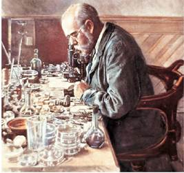

AMBE 101 :: Lecture 02 :: GERM THEORY OF DISEASE

Introduction
Bacteria are mostly unicellular organisms that lack chlorophyll and are among the smallest living things on earth—only viruses are smaller. Multiplying rapidly under favorable conditions, bacteria can aggregate into colonies of millions or even billions of organisms within a space as small as a drop of water.The Dutch merchant and amateur scientist Anton van Leeuwenhoek was the first to observe bacteria and other microorganisms. Using single-lens microscopes of his own design, he described bacteria and other microorganisms (calling them "animacules") in a series of letters to the Royal Society of London between 1674 and 1723.
Bacteria are classified as prokaryotes. Broadly, this taxonomic ranking reflects the fact that the genetic material of bacteria is contained in a single, circular chain of deoxyribonucleic acid (DNA) that is not enclosed within a nuclear membrane. The word prokaryote is derived from Greek meaning "prenucleus." Moreover, the DNA of prokaryotes is not associated with the special chromosome proteins called histones, which are found in higher organisms. In addition, prokaryotic cells lack other membrane-bounded organelles, such as mitochondria. Prokaryotes belong to the kingdom Monera. Some scientists have proposed splitting this designation into the kingdoms Eubacteria and Archaebacteria. Eubacteria, or true bacteria, consist of more common species, while Archaebacteria (with the prefix archae—meaning ancient) represent strange bacteria that inhabit very hostile environments. Scientists believe these bacteria are most closely related to the bacteria which lived when the earth was very young. Examples of archaebacteria are those bacteria which currently live in extremely salty environments or extremely hot environments, like geothermal vents of the ocean floor
Microbes are organisms that we need a microscope to see. The lower limit of our eye's resolution is about 0.1 to 0.2 mm or 100 - 200 um. Most microbes range in size from about 0.2 um to the 200 um upper limit, although some fruiting bodies of fungi can become much larger. Microbes include the bacteria, algae, fungi, and protozoa. In this lecture we will discuss mostly the bacteria and the fungi.
Bacteria are found everywhere in water, soil, and even air. These small prokaryotic cells, typically from 0.2 to 1 um in length, are capable of living in boiling water, frozen ground, acid volcanoes, and at the bottom of the ocean. They can reproduce by doubling with a generation time of 20 minutes, or survive for centuries in a resting stage. In natural waters (lakes, streams, oceans) their generation time is around 1 day. In soils they live in a film of water around plant roots or other particles, and their activity is dependent on the temperature and the amount of available moisture. In general, bacteria are found in concentrations of 106 cells/mL of water in surface waters, and 109 cells/mL of soil in soils and sediments.
Robert Koch (1843 -1910): The Father of Microbial Techniques
Robert Koch, a German Physician, is well known to the world of microbiology for this significant contributions especially in the area of microbial techniques. He introduced analine dyes for staining bacteria; used agar-agar and gelatin to prepare solid culture media; stressed the need for pure culture to study microbes in details; confirmed germ theory of disease, and laid down Koch's postulates to test the pathogenesity of causative agents. He also discovered the casual organisms of anthrax disease of cattle (Bacillus anthracis) and tuberculosis (Mycobacterium tuberculosis).

Robert Koch was particularly concerned with this problem and, at first, he cultured bacteria on solid fruits and vegetables such as slices of boiled potato but many bacteria did not grow on such substrates. Then he perceived that it would be far better if a well-tried liquid medium could be solidified with some clear substance. Koch (1881) tried gelatin as a solidifying agent and succeeded in developing solid culture media, but gelatin, the first solidifying agent used, had serious disadvantage of becoming liquid above 28-30°C which is below the optimum temperature for the growth of human disease producing bacteria.
However, Koch replaced gelatin by agar in 1883-84 on the recommendation of F.E. Hesse, a German housewife, who had gained experience with the characteristics of agar in the process of making jelly. Agar is still frequently used as solidifying agent in microbiological laboratories. The development of solid culture media to grow pure culture was of fundamental importance and may be considered one of the Koch's greatest contributions.
Besides developing solid culture media using gelatin and agar, Koch also evolved methods to placed microbes on glass slides and colour them with analine dyes (stains) so that the individual cells could be seen more clearly under the microscope.
KOCH’S POSTULATES
1. The microorganism must be present in every case of the disease but absent from healthy organisms.
2. The suspected microorganism must be isolated and grown in a pure culture.
3. The same disease must result when the isolated microorganism is inoculated into a healthy host.
4. The same microorganism must be isolated again from the diseased host.
"One microbe, one disease"
- Robert Koch (1843-1910) was the first to rigorously demonstrate that a specific disease was caused by a specific microorganism.
- Koch worked on anthrax, a disease mainly of animals. Koch noticed that cattle that died of anthrax all seemed to have a certain rod-shaped bacterium in blood, not found in healthy animals. Koch was able to isolate the bacterium in pure culture, put it back into healthy cows, and reproduce the disease.
- Koch's Postulates: a logical way to identify the microbe causing a disease
- A specific microbe must be present in all disease cases
- Microbe must be cultivated outside host in a pure culture
- When pure culture of microbe is inoculated into healthy hosts, disease symptoms identical to those of initial host must be reproduced
- Microbe can be isolated again in pure culture from this experimentally inoculated host.
- Initial attempts to isolate microbes used sliced potatoes or nutrient media containing gelatin -- not ideal media. Then Fannie Hesse (wife of lab worker) suggested agar, a gelling agent used in cooking. Agar rapidly became the standard gelling agent for microbial isolation because it is relatively inert (only some marine microbes have enzymes to digest agar). Agar only melts at high temperatures (100oC); once melted, it remains liquid until about 45oC, at which point it gels.
- Koch's success at identifying anthrax with bacterium Bacillus anthracis led both Koch and Pasteur to identify the causes of many diseases -- cholera, tuberculosis, plague, etc. -- over the next few decades (late 1880's) -- the "Golden Age of Microbiology" (~ 1870-1920). Note that many microbiologists would regard the present as a new "Golden Age", since the development of molecular biological techniques, PCR, molecular phylogeny, and other developments have revealed many new insights and opened a world of new research directions and ways of understanding microbes.
| Download this lecture as PDF here |